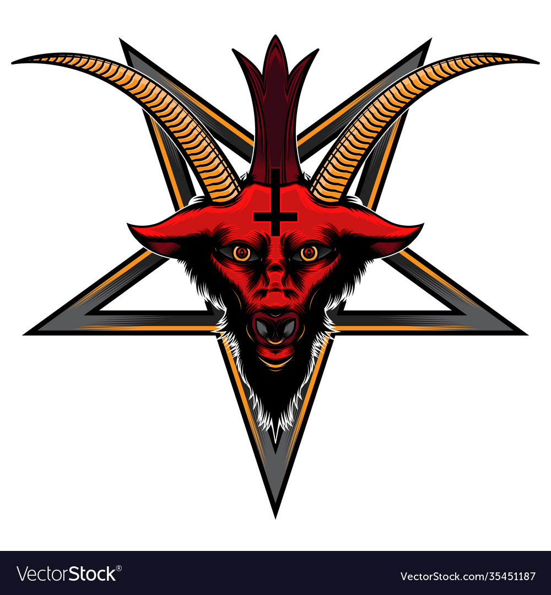

These are things that people are afraid of that pose no real danger to humans
but they become increasingly disturbing
You can resize this window to change the images
Birds of Prey
Godzilla
Baphomet
